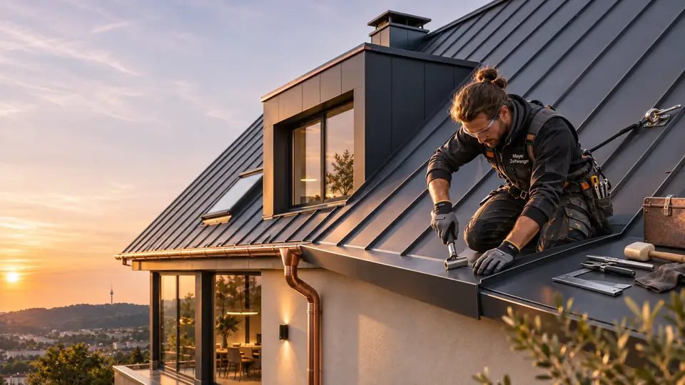

01 / METALLDÄCHER
Metalldächer
Handwerklich ausgeführte Metalldächer für Neubau- und Bestandsarchitektur. Die Materialauswahl richtet sich nach dem Bauvorhaben und der gewünschten Wirkung.
KupferTitanzinkFarbaluminiumEdelstahl
Projekt besprechen 